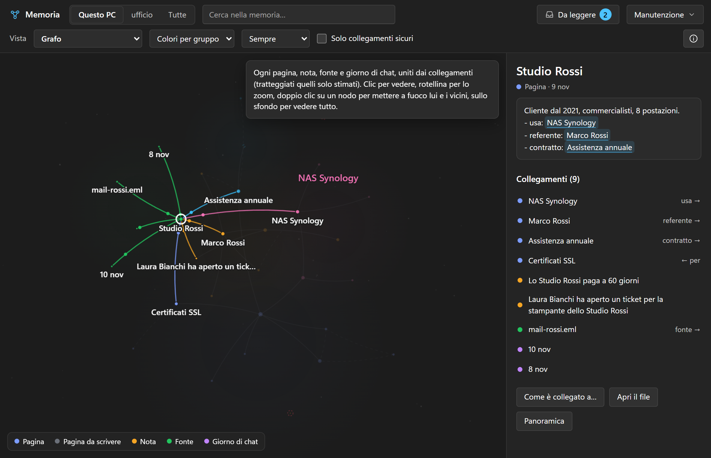
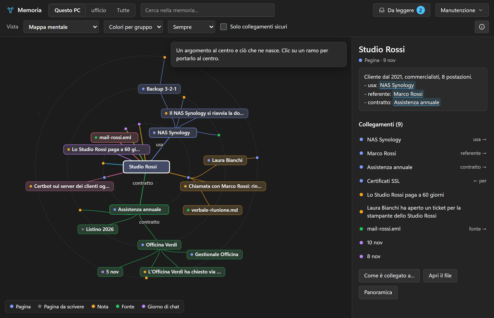
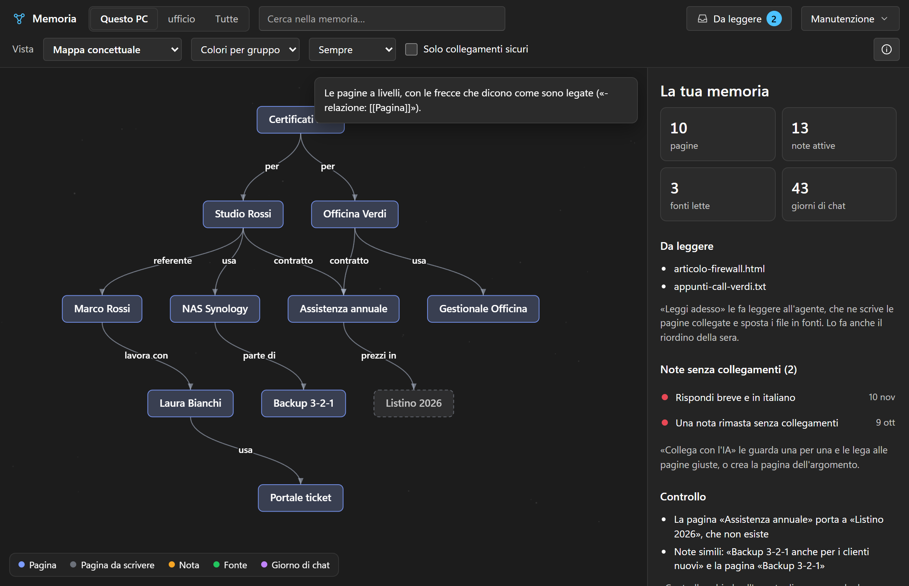
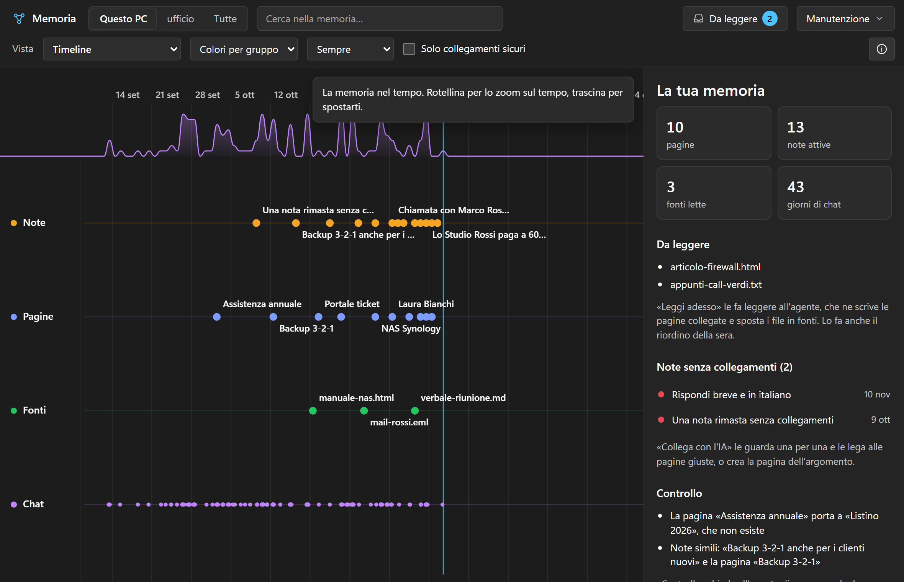

Memoria e secondo cervello
Cosa ricorda EasyIsland, come impara dai tuoi file e come esplorarlo in grafo, mappe e timeline.
La memoria di EasyIsland è fatta di file Markdown in %APPDATA%\EasyIsland\memoria, che puoi leggere e correggere con qualsiasi editor. Vale per tutti i motori. Si spegne insieme alla cronologia (Impostazioni → Chat → Cronologia).
#Le note: MEMORIA.md
Le cose da ricordare sempre, una per riga con la data: preferenze, clienti, persone, come si fa una cosa. Le regole (quelle con «sempre», «mai», «non deve», «preferisce»…) vanno davanti a ogni conversazione; le altre note arrivano solo quando la domanda le riguarda, quindi costano pochi token.
- La chat le salva da sola quando dici qualcosa che vale anche per le prossime volte.
- Tu le salvi con
/ricorda …in chat, o dal campo Ricorda… della finestra Memoria. - Oltre 60 note, le più vecchie passano in
archivio.md, che resta cercabile. - Niente password o chiavi: la chat ha l'istruzione di non salvarle.
#Il diario
diario/AAAA-MM.md: una riga per ogni domanda con risposta (ora, motore, domanda, inizio della risposta). Lo scrive EasyIsland senza nessun modello, quindi non costa niente. La chat ci guarda solo quando serve («l'altra volta come avevamo risolto…?»).
#Le pagine collegate
pagine/<nome>.md: una pagina per argomento (una persona, un cliente, un progetto, un concetto), come in un wiki:
# Studio Rossi
fonte: mail-rossi.eml
aggiornata: 2026-10-24
riassunto: Cliente di Torino, studio di commercialisti, referente Marco Rossi.
alias: Rossi, Studio Rossi & C.
Cliente dal 2021, commercialisti, 8 postazioni.
- usa: [[NAS Synology]]
- referente: [[Marco Rossi]]
- contratto: [[Assistenza annuale]][[Titolo]]collega un'altra pagina; una riga- relazione: [[Altra]]dice come sono legate.riassunto:è una frase su chi o cosa è;alias:gli altri nomi con cui lo chiami (sigle, nomi di prodotto). Sono facoltativi: li scrive il motore per la memoria o la chat, e puoi correggerli a mano.- Quando la chat cerca nella memoria, riceve le pagine trovate e il riassunto di quelle collegate: più contesto con poche parole. Fa anche un passo in più, ma solo sui legami forti: se «Studio Rossi» ha come referente «Marco Rossi», e la sua pagina dice «- sede: [[Torino]]», arriva anche a Torino. Cerca anche negli alias: chiedendo di «UDM» trova la pagina «Dream Machine», e un
[[UDM]]porta a quella pagina. - Per risparmiare, la chat guarda prima la scheda di una pagina (riassunto e collegamenti) e apre il testo intero solo se serve.
- Se chiedi come sono legate due cose, la chat trova la strada più corta fra le due pagine, passo per passo, senza leggerle.
- Una riga che finisce con
(dedotto)è un legame ricavato da un motore, non scritto in una fonte: controllalo, e togli il segno se è giusto. - Il campo in alto nell'isola cerca in tutta la memoria, come la Mappa: pagine, note, fonti, anche dell'altro PC. Se trova qualcosa si apre una piccola costellazione con il nodo e i suoi vicini: le frecce o un clic su una stella la spostano, Invio o Nuova chat apre una chat nuova che parte da quel nodo e aspetta la tua domanda, Apri nella Mappa porta alla finestra grande.
- La chat le scrive quando le chiedi «fai una pagina su…», e dalle fonti (sotto).
- Scritture sicure: se modifichi a mano una pagina mentre l'agente ci lavora, la sua scrittura viene rifiutata; deve rileggerla e ripartire dalla tua versione.
#Da leggere: insegnare con i file
Metti nella cartella da-leggere articoli, appunti, trascrizioni di riunioni, mail salvate (.md, .txt, .html, .eml, .csv, .json…), oppure trascinali sulla finestra Memoria. Poi:
- l'agente legge ogni file;
- scrive o aggiorna le pagine giuste, con il nome del file in
fonte:e i collegamenti; - sposta il file in
fonti/, intatto.
Succede la sera con il Riordino della memoria o subito con Leggi adesso. I file che non sono testo (PDF, Word) vengono passati con il loro percorso: Claude Code li sa aprire.
#Ricorda questo
Seleziona un testo in qualunque programma (una mail, una pagina, una chat) e premi Win+Alt+M: l'isola mostra la card Ricorda con il testo e da dove viene. Correggilo se serve, scrivi in Riguarda… di chi o di cosa parla (facoltativo) e premi Ricorda: l'IA lo mette subito nella pagina giusta della memoria, collegata alle altre.
Senza niente selezionato la card è vuota: scrivi tu, per esempio «Rossi preferisce essere chiamato dopo le 15». C'è anche nel menu sul testo selezionato (Win+Alt+A). Funziona anche dal campo in alto (ricordati che …) e da Telegram con /ricorda …. La scorciatoia si cambia in Impostazioni → Azioni rapide; se preferisci che impari la sera, spegni «Ricorda questo» impara subito in Impostazioni → Flussi → Secondo cervello.
In Riquadra e chiedi c'è anche Ricorda: il testo della zona riquadrata (letto da Windows) va nella card.
#Il secondo cervello al lavoro
EasyIsland tiene aggiornate da solo le pagine di persone e clienti, ma scrive solo quello che approvi:
- dopo una chiamata 3CX risposta, l'isola propone Annota: scrivi due righe su cosa vi siete detti e vanno nella pagina di chi ha chiamato;
- quando un tuo ticket di Zammad si chiude, il problema e la soluzione;
- le mail importanti (con l'account Microsoft collegato): quelle segnate come importanti e quelle di chi ha già una pagina.
Dieci minuti dopo, un compito ti propone le righe da aggiungere e gli impegni presi («ti mando domani il preventivo») come promemoria in To Do: spunta quelle da fare e, se una è quasi giusta, premi Commenta e scrivi cosa sbaglia. Il venerdì alle 17 arriva il riepilogo della settimana: cosa ha imparato la memoria e cosa è rimasto aperto. Tutto si accende e si spegne in Impostazioni → Flussi → Secondo cervello (l'Annota in Impostazioni → Notifiche → Proposte).
#Il controllo
EasyIsland trova da sola: note simili o più vecchie di sei mesi, collegamenti a pagine che non esistono, pagine isolate, vecchie o sullo stesso argomento. L'agente aggiunge le contraddizioni che nota e ti propone le correzioni nell'isola, una casella per correzione, con il testo intero: togli la spunta a quelle che non vuoi e, se una è quasi giusta, premi Commenta e scrivi cosa sbaglia (l'agente la corregge prima di farla); Tutte / Nessuna cambiano tutte le caselle, in fondo una nota per tutte. Se non rispondi subito la domanda resta in Impostazioni → Flussi, con le stesse caselle. Fa solo quelle approvate e non cancella mai: al massimo sposta una nota in archivio.md o una pagina in archivio/pagine.
Parte la domenica sera con il Riordino, se c'è qualcosa da sistemare, o subito con Controlla.
#Il riordino della sera
Impostazioni → Flussi → Riordino della memoria: ogni sera alle 22:30 l'agente
- rilegge il diario del giorno e ti propone al massimo 5 cose da ricordare (salva solo quelle che approvi);
- legge i file in
da-leggere; - la domenica fa il controllo.
Se non c'è niente da fare non parte e non costa niente.
#Motore per la memoria
In Impostazioni → Chat → Memoria → Motore per la memoria puoi scegliere un motore, anche gratuito, che collega la memoria scrivendolo nei file: crea una pagina per ogni argomento che torna in più note (un cliente, un progetto, una persona), con i rimandi alle note, aggiunge le relazioni tra pagine («cliente di», «lavora con»…) e tiene aggiornato il riassunto di ogni pagina con gli altri nomi. Lavora da solo dopo il riordino della sera e quando premi Collega con l'IA nella mappa. Aggiunge soltanto: non cancella e non riscrive le tue note. Con un motore in cloud le note vengono mandate a quel servizio; con Ollama o LM Studio restano sul PC. Con Nessuno la mappa collega le voci da sola, dalle parole in comune. Quando una nota su un cliente o un progetto finisce nella sua pagina, esce dalle note di sempre (resta nell'archivio).
#Cosa ricorda da sola
Dopo ogni risposta EasyIsland decide cosa tenere: le regole («i preventivi sempre in PDF») vanno tra le note, i fatti su un cliente, un sito o un progetto vanno nella sua pagina, e una nota corretta o ripetuta passa in archivio. Non tiene cose del momento, numeri di versione o codici interni. Le note su un appuntamento o un intervento con una data vanno in archivio quando quel giorno è passato.
#Ricerca per significato
In Impostazioni → Chat → Memoria → Ricerca per significato puoi far cercare la memoria anche per significato, non solo per le parole in comune: «computer» trova una nota sul «PC». Scegli un servizio (OpenAI, Gemini, OpenRouter con le chiavi della chat, oppure Ollama o LM Studio sul PC). Serve con una memoria grande; con un servizio in cloud le righe della memoria vengono mandate a quel servizio.
Collega con l'IA controlla anche i collegamenti della mappa: per ogni nota nuova o cambiata il motore guarda le pagine e le note a cui potrebbe appartenere e tiene solo quelle vere (una parola in comune come «server» o «cliente» non basta più). Il giudizio resta in collegamenti.json accanto alla memoria, viaggia con la memoria condivisa e la mappa lo usa al posto delle supposizioni. Non cambia le note né le pagine. Sulla copia di un altro PC il pulsante controlla quella copia da qui, se quel PC non l'ha già fatto. Con molte note lo fa a pezzi: premilo di nuovo finché non dice che è finito.
#La finestra Memoria
Il pulsante con i tre nodi in alto nell'isola (o Impostazioni → Chat → Memoria → Mappa) apre una finestra tutta sua, a schermo intero, con la memoria disegnata in tanti modi. Una nota si collega alle pagine che nomina, a quelle che l'IA ha confermato e, finché l'IA non l'ha guardata, a quelle con cui ha in comune parole rare (un nome, un apparecchio); i collegamenti solo stimati sono tratteggiati. Le note archiviate che non c'entrano con niente non affollano il grafo.
In alto, «Vista» sceglie il disegno; accanto i filtri:
- Colori per gruppo / per tipo: i gruppi sono gli argomenti che vanno insieme (un cliente con le sue persone e note), trovati da soli, ognuno col suo colore e il suo nome.
- Periodo: solo ciò che è dell'ultimo mese, dei 3 mesi o dell'anno.
- Solo collegamenti sicuri: toglie quelli solo stimati.
- La legenda in basso filtra: un clic nasconde quel tipo (note, fonti, giorni…).
Claude Code ha una sua memoria: le note che salva da solo mentre lavori con lui (come vuoi che lavori, fatti dei progetti). EasyIsland le legge, di ogni account di Claude Code su questo PC, e le trova con la ricerca della memoria, il campo in alto e la Mappa, alla voce Claude Code. Si leggono soltanto: le scrive e le corregge Claude Code. Ognuna porta la sua data e, se dice altro rispetto alla memoria di EasyIsland, vale quella di EasyIsland. Una nota che EasyIsland ricorda già non compare due volte: nella Mappa diventa un collegamento a quella nota. Quelle sul tuo modo di lavorare salvate fuori da un progetto arrivano anche all'inizio di ogni conversazione. Si spengono con Memoria di Claude Code in Impostazioni → Flussi → Secondo cervello.
Se ricevi la memoria di un altro PC (Memoria condivisa fra due PC, in Integrazioni), in alto compaiono Questo PC, il nome dell'altro PC e Tutte: scegli quale memoria vedere, o tutte e due insieme; in Tutte le cose dell'altro PC hanno il suo nome accanto. La copia dell'altro PC si guarda soltanto: le note nuove vanno nella memoria di questo PC.
#Grafo

Ogni pagina, nota, fonte e giorno di chat è una stella, unita alle altre dai collegamenti. Le stelle più collegate sono più grandi, le più recenti più luminose; ogni gruppo ha una nuvola del suo colore con il nome, che si legge da lontano. Avvicinandoti compaiono i nomi delle pagine, poi delle note. Clic su una stella: si illuminano i suoi collegamenti, con scintille che li percorrono, e a destra vedi il testo e l'elenco dei collegamenti.
- Doppio clic su una stella: restano solo lei e ciò che le sta vicino (due passi); doppio clic sullo sfondo per tornare a tutto.
- Come è collegato a… (nel pannello): poi clicca un'altra stella e si illumina la strada più corta fra le due, passo per passo anche a destra.
- Le note senza collegamenti hanno un anello rosso e sono elencate nella panoramica: Collega con l'IA le sistema.
#Grafo 3D
Lo stesso grafo nello spazio, come un globo di stelle. Trascina per girarlo (continua a ruotare un poco quando lasci), rotellina per avvicinarti, doppio clic per vedere tutto. Le stelle lontane sono più tenui; cliccandone una il globo si gira per portarla davanti a te.
#Galassia
Ogni gruppo è una galassia del suo colore, con le pagine nel nucleo e le note lungo i bracci a spirale; ciò che non sta in un gruppo sono le stelle sparse. Le note nuove brillano un istante; cercando, si accende la scia fra le stelle trovate.
#Rete neurale
La memoria come neuroni raccolti per argomento. Quando la chat, Agent Chat o l'altro PC leggono o scrivono la memoria, gli impulsi di luce partono dal centro verso ciò che toccano e corrono ai vicini: vedi la memoria «pensare» mentre lavorano. Clic su un neurone per mandarne uno tu. A riposo non si muove niente.
#Bolle
Una bolla per gruppo, grande quanto ciò che contiene, con dentro le sue pagine (più grandi) e le note.
#Raggiera
Cerchi concentrici: al centro la memoria, intorno le pagine, larghe quanto le note che raccolgono, fuori le note di ogni pagina. Mostra a colpo d'occhio quali argomenti pesano di più.
#Mappa mentale

Un argomento al centro e ciò che ne nasce, fino a tre anelli: ogni ramo ha il suo colore e cresce dal centro. Clic su un ramo per portarlo al centro.
#Mappa concettuale

Le pagine a livelli, dall'alto in basso, con frecce che dicono la relazione («usa», «referente», «contratto»…). Le pagine citate ma non ancora scritte sono tratteggiate.
#Mappa ad albero
I gruppi e le pagine principali in riquadri grandi quanto il loro peso nella memoria.
#Matrice
Una griglia con le pagine principali su righe e colonne: passa il mouse su una cella per leggere come sono legate.
#Salute
A colpo d'occhio quante pagine sono scritte, quante note sono isolate e da collegare, e gli argomenti principali.
#Fiume
Gli argomenti nel tempo: ogni gruppo è una striscia colorata larga quanto se ne è scritto ogni settimana (ultimi sei mesi). Si vede quando un cliente o un progetto è diventato caldo. Rotellina per lo zoom sul tempo.
#Da dove arriva
A sinistra da dove arriva la memoria (chat, Agent Chat, altro PC, ticket, mail, chiamate, Telegram, file letti), a destra le pagine in cui finisce, unite da flussi larghi quanto i collegamenti. Passa il mouse su un flusso per i numeri.
#Timeline

La memoria nel tempo, in corsie: note, pagine, fonti e chat. In alto un'onda mostra quante domande hai fatto ogni giorno. Rotellina per lo zoom sul tempo (da anni a ore), trascina per spostarti.
#Nella finestra
- Cerca nella memoria…: illumina ciò che corrisponde; Invio va al primo.
- Da leggere (n): apre la cartella; Leggi adesso e Controlla avviano i compiti subito.
- Trascina file sulla finestra: finiscono in
da-leggere. - Ricorda…: una nota nuova.
- Pannello a destra: statistiche, file in attesa, risultati del controllo, oppure l'elemento scelto con Apri il file.
- Rotellina per lo zoom, trascinare per spostarsi, doppio clic per vedere tutto.
- Si aggiorna da sola quando l'agente scrive nella memoria.